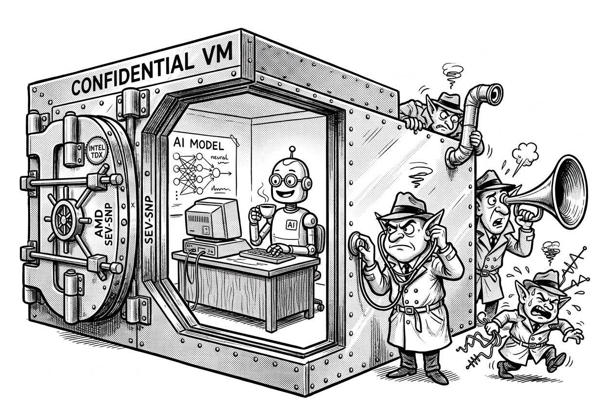

2023 – Active
Since 2023, I have investigated the architectural security and hardware isolation of modern confidential virtual machines (CVMs) for high-assurance private AI in the cloud. As machine learning models and large language models (LLMs) are deployed to process sensitive user prompts, medical records, and proprietary model weights, traditional multi-tenant cloud isolation is insufficient. Hardware trusted execution environments (TEEs)—notably AMD Secure Encrypted Virtualization-Secure Nested Paging (SEV-SNP), Intel Trust Domain Extensions (TDX), and Arm Confidential Compute Architecture (Arm CCA)—serve as the foundational root of trust to shield confidential workloads from untrusted hypervisors, cloud operators, and co-located tenants.

While hardware-based memory encryption and integrity protections safeguard physical memory, microarchitectural side channels and execution state transitions present subtle vectors for data exposure. In SNPeek (NDSS 2026), we analyzed side-channel leakage across AMD SEV-SNP confidential VMs, showing how memory access patterns and architectural traces can leak private inference inputs to a malicious host. Concurrently, in TDXRay (IEEE S&P 2026), we developed a comprehensive side-channel analysis framework for Intel TDX under realistic cloud environments, quantifying microarchitectural leakage across real-world workloads and establishing rigorous testing methodologies for confidential virtualization.
Beyond x86 architectures, our ongoing research investigates the emerging Arm Confidential Compute Architecture (Arm CCA) and its Realm Management Extension (RME). We evaluate the security guarantees of Arm Realms under adversarial hypervisor models, scrutinizing architectural state transitions, interrupt virtualization, and microarchitectural side channels on next-generation Arm server silicon.
Securing confidential compute also demands rigorous verification of silicon implementations, firmware, and virtualization features. In 2026, I co-led a Joint Security Review of Intel TDX 1.5 between Google and Intel, publishing an in-depth Technical Report that evaluated confidential VM live migration, CPU state transitions, and hypervisor interaction boundaries. Furthermore, in DDRop (ACM CCS 2026), we investigated the physical integrity boundaries of confidential VMs, demonstrating active memory interposer attacks on DDR5 buses. At Google, this ongoing research across AMD SEV-SNP, Intel TDX, and Arm CCA directly drives architectural hardening, platform attestation mechanisms, and defense-in-depth strategies to ensure that cloud-based private AI achieves cryptographic-level confidentiality and integrity in production.